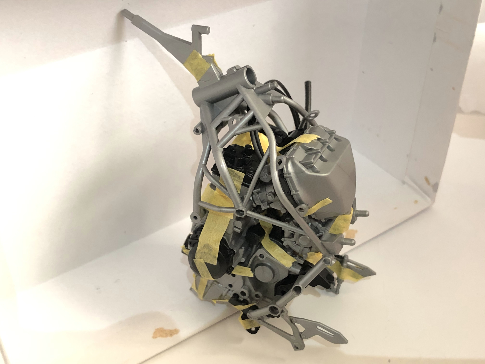
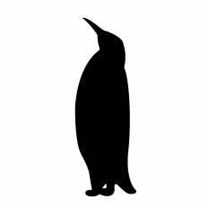
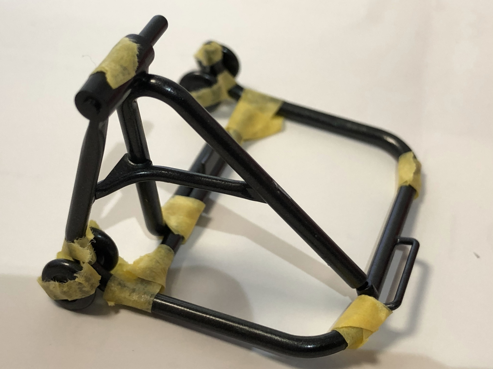

今日はフレーム部分を組み立ててエンジンと合体させます。
まずはフレームの組み立てから

いいですねぇ～
ちなみにこの所々三角形なフレーム構造のことをトラス(Truss)構造って呼ぶみたいです。
電車の鉄橋とかに使われてますよね～
ラーメン構造とかもあるみたいですよ(くわしくはここをCheck!)
さて、これをエンジンと合体！

臓器と骨ができあがりました。

？？？
茶番はここまでにしてついでにスタンドも組み立てておきましょう

これまでで一番完成度が高い(笑)
バイクスタンドがあればチェーンのメンテナンスとかしやすいんですよね～
今日はここまで！